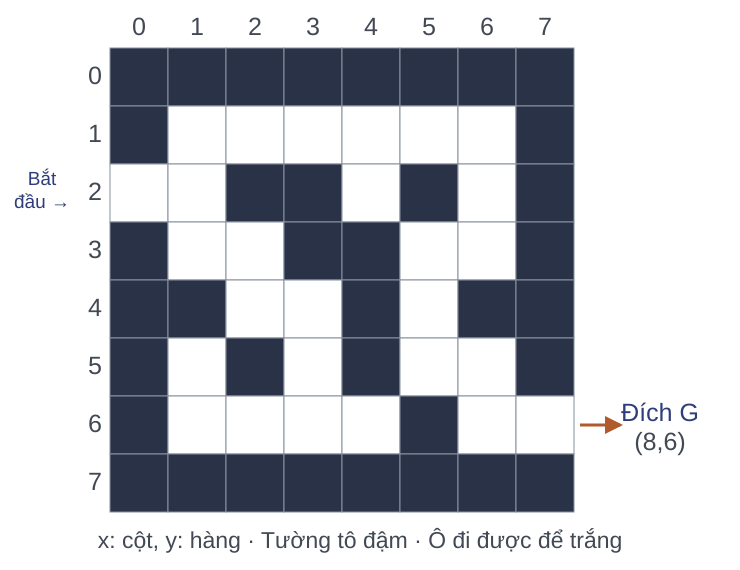
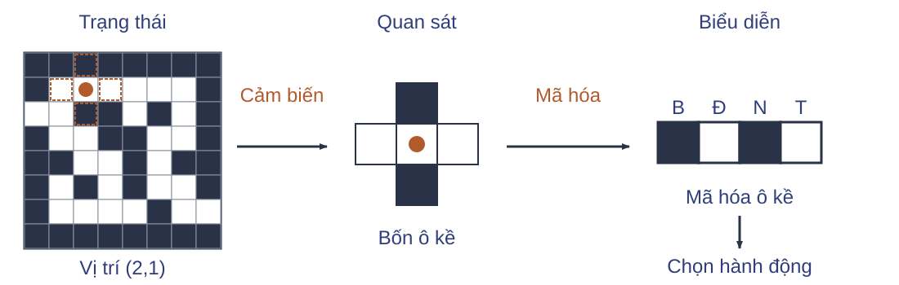
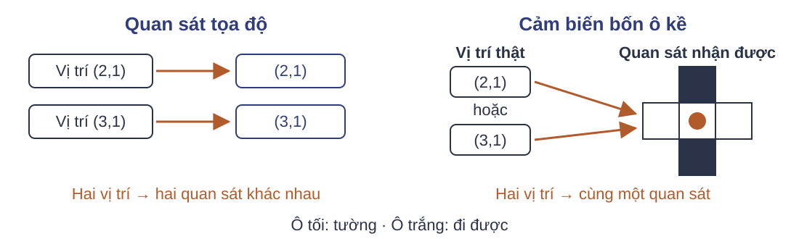
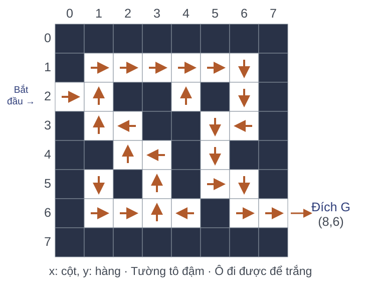
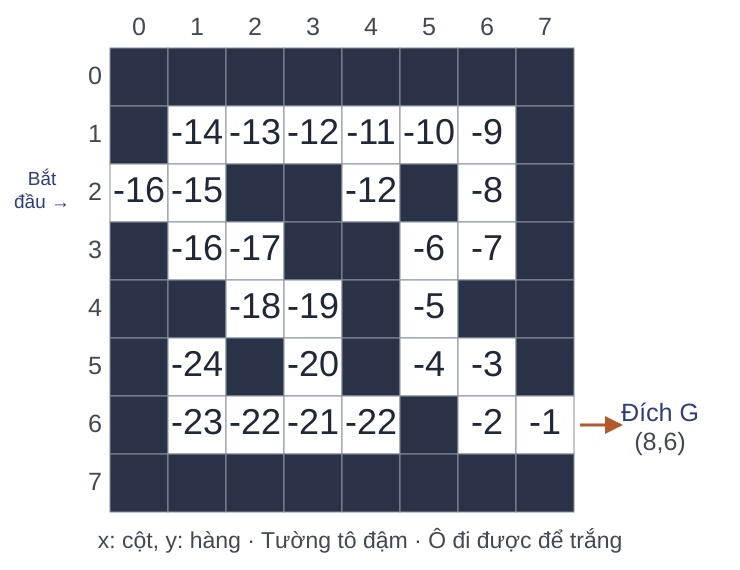
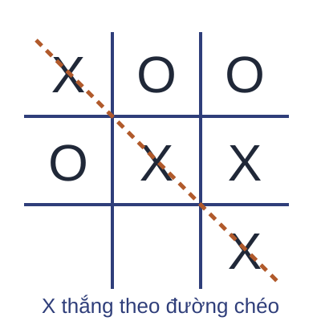

Bài toán ra quyết định tuần tự
Học tăng cường · Học kỳ 1, 2026–2027
Trường Đại học Công nghệ · Đại học Quốc gia Hà Nội
Mê cung và chuỗi quyết định

Nhiệm vụ: đi từ điểm bắt đầu tới đích.
Mỗi bước đi thay đổi vị trí và đường đi còn lại.
Mục tiêu học tập
- Mô tả tương tác tác tử–môi trường bằng các thành phần của giao diện.
- Phân biệt thông tin tác tử nhận được và quy tắc chọn hành động.
- Đánh giá và dự báo kết quả của một chuỗi quyết định.
Nội dung bài học
Bài toán ra quyết định tuần tự
Tương tác và phần thưởng
Trạng thái và thông tin quan sát
Chính sách lựa chọn hành động
Hàm giá trị và mô hình môi trường
Dự đoán, điều khiển và bài toán mê cung
Tổng kết và tự kiểm tra
Câu hỏi kiểm tra
- Trong mê cung, mỗi bước tác tử chọn điều gì để di chuyển?
- Hành động hiện tại ảnh hưởng đến lựa chọn về sau ra sao?
- Nêu một tiêu chí để so sánh hai đường đi tới cùng đích.
Tác tử và môi trường

Tác tử: chọn hành động.
Môi trường: sinh phản hồi cho hành động.
Một bước trong mê cung
Tại $(0,2)$, chọn Đông.
Chuyển đến $(1,2)$.
Nhận thưởng $-1$.
Thứ tự tương tác

$t=0,1,2,\ldots$ đánh số bước tương tác.
$O_t\in\mathcal O$: quan sát; $A_t\in\mathcal A$: hành động.
$R_{t+1}\in\mathbb R$: phần thưởng sau $A_t$.
Tín hiệu học
| Khung | Tín hiệu | Thời điểm |
|---|---|---|
| Có giám sát | Nhãn đúng cho mỗi mẫu | Tại lúc học |
| Không giám sát | Không có nhãn | — |
| Tăng cường | Phần thưởng mỗi bước | Sau hành động |
Giả thuyết điểm thưởng
Mọi mục tiêu có thể được mô tả bằng việc cực đại hóa kỳ vọng của phần thưởng tích lũy.
Ví dụ: Trong mê cung, thưởng $-1$ mỗi bước và dừng ở đích khiến đường đi ngắn hơn có tổng thưởng lớn hơn.
Mục tiêu xét cả chuỗi phần thưởng, không chỉ phần thưởng ở bước hiện tại.
Phản hồi trễ

Ví dụ trò chơi: chỉ gán thưởng khác 0 khi kết thúc với thắng hoặc thua.
Một hành động có thể ảnh hưởng kết quả xuất hiện nhiều bước sau.
Câu hỏi kiểm tra
- Từ $(1,2)$ chọn Bắc đến $(1,1)$, thưởng $-1$, quan sát là tọa độ. Hãy ghi $A_t$, $R_{t+1}$, $O_{t+1}$.
- Giả thuyết điểm thưởng nêu tiêu chí tối ưu nào cho tác tử?
- Nhận $-1$ ngay có đủ để đánh giá hành động Bắc hay không?
Trạng thái và quan sát

$S_t=(2,1)$; $O_t$: bốn ô kề; $X_t=(1,0,1,0)$ theo thứ tự Bắc–Đông–Nam–Tây.
Mã hóa: 1 là tường, 0 là ô trống. Biểu diễn này chưa xác định được vị trí.
Định nghĩa trạng thái, quan sát và biểu diễn
| Khái niệm | Ký hiệu | Định nghĩa |
|---|---|---|
| Trạng thái | $S_t \in \mathcal{S}$ | Cấu hình môi trường được mô hình biểu diễn tại thời điểm $t$. |
| Quan sát | $O_t \in \mathcal{O}$ | Thông tin nhận được từ môi trường tại thời điểm $t$. |
| Biểu diễn | $X_t \in \mathcal{X}$ | Dữ liệu tác tử dùng để chọn hành động tại $t$, tính từ thông tin khả dụng. |
$O_{0:t}=(O_0,\ldots,O_t)$; các dãy hành động và thưởng viết tương tự.
Mẫu dữ liệu, lịch sử và quỹ đạo
Mẫu dữ liệu một bước: $(o_t,a_t,o_{t+1},r_{t+1})$.
Lịch sử trạng thái tới thời điểm $t$:
Quỹ đạo trạng thái kết thúc tại $T$:
Quan sát đầy đủ và một phần

Đầy đủ: từ $O_t$ xác định được $S_t$.
Một phần: một $O_t$ có thể phù hợp với nhiều $S_t$.
Tính Markov
Biết trạng thái và hành động thì lịch sử không cải thiện dự báo bước tới.
$H_t$: lịch sử trạng thái–hành động–thưởng; $h$ kết thúc ở $s$.
Tính Markov có hạn chế khả năng mô hình hóa?
Không về nguyên tắc, nếu được phép mở rộng trạng thái.
- Toàn bộ lịch sử $H_t$ làm trạng thái mới bảo đảm tính Markov.
- Hạn chế: kích thước lịch sử tăng theo thời gian, không bảo đảm biểu diễn gọn.
Câu hỏi kiểm tra
- Phân loại ba quan sát: tọa độ chính xác; ảnh toàn mê cung thấy rõ tác tử; cảm biến bốn ô kề.
- Nếu mở cửa phụ thuộc việc có chìa khóa, tọa độ còn đủ để mô tả trạng thái Markov không? Cần bổ sung gì?
- Dùng toàn bộ lịch sử làm trạng thái có hạn chế thực hành gì? Ghép hữu hạn quan sát có bảo đảm Markov không?
- Mẫu một bước, lịch sử $H_t$ và quỹ đạo $\tau$ khác nhau về phạm vi thông tin như thế nào?
Chính sách

Chính sách là quy tắc chọn hành động cho từng trạng thái.
Ví dụ về chính sách
Tại $x=(1,2)$, xét hai quy tắc chọn hành động.
| Quy tắc | Bắc | Đông | Nam | Tây |
|---|---|---|---|---|
| Luôn Bắc | 1 | 0 | 0 | 0 |
| Bắc hoặc Đông | 0,5 | 0,5 | 0 | 0 |
Các số là xác suất chọn. Tại ô này, chọn Đông gặp tường và giữ nguyên vị trí.
Chính sách xác định
Với mỗi biểu diễn đầu vào, chính sách xác định chọn một hành động.
| $x$ | $\pi(x)$ |
|---|---|
| $(0,2)$ | Đông |
| $(1,2)$ | Bắc |
| $(1,1)$ | Đông |
Chính sách ngẫu nhiên
Với $x\in\mathcal X$, chính sách cho một phân phối trên $\mathcal A$.
$\pi(a\mid x)\ge0$, và $\sum_{a\in\mathcal A}\pi(a\mid x)=1$.
Ví dụ từ bảng trước: $\pi(\text{Bắc}\mid(1,2))=0{,}5$.
Nếu dùng trạng thái đầy đủ làm đầu vào, chọn $X_t=S_t$.
Câu hỏi kiểm tra
- Cho $\pi(\text{Bắc}\mid x)=0{,}2$, $\pi(\text{Đông}\mid x)=0{,}5$, $\pi(\text{Tây}\mid x)=0$. Tính $\pi(\text{Nam}\mid x)$.
- Phân loại chính sách đó và giải thích lý do.
- Chính sách xác định là trường hợp nào của phân phối hành động?
Kết quả dài hạn của chính sách
Hai chính sách có thể nhận cùng thưởng tức thời nhưng tạo ra các đường đi dài khác nhau.
Chính sách
Chọn hành động.
Hàm giá trị
Đánh giá kết quả dài hạn.
Mô hình
Dự báo phản hồi.
Ưu tiên dừng và tổng phần thưởng
Thêm cùng phần thưởng $r$ vào đầu hai chuỗi không đổi thứ tự ưu tiên:
$a,b$: mọi chuỗi hữu hạn số thực; $[r,a]$: thêm $r$ vào đầu $a$; $\succ$: ưu tiên hơn.
Định lý: Với lợi ích $U=\sum_i w_i r_i$, trọng số dương không tăng,
độc lập độ dài chuỗi và $w_1=1$, tính dừng buộc $w_i=\gamma^{i-1}$.
| Tổng phần thưởng | Tổng có chiết khấu |
|---|---|
| $U=\sum_{i=1}^{T}r_i$ | $U=\sum_{i=1}^{T}\gamma^{i-1}r_i$ |
| $\gamma=1$ | $0<\gamma<1$ |
$\gamma$: hệ số chiết khấu; $T$: độ dài chuỗi thưởng hữu hạn.
Phần thưởng tích lũy
$T$: thời điểm kết thúc; $t<T$. Hệ số chiết khấu $\gamma\in[0,1]$.
$G_T=0$: không còn thưởng sau khi kết thúc.
Giá trị kỳ vọng
Ví dụ giả định: từ $s$, dưới một chính sách cố định, môi trường chọn một trong hai nhánh kết thúc.
| Số bước còn lại | Xác suất | Tổng thưởng |
|---|---|---|
| 3 | $0{,}5$ | $-3$ |
| 5 | $0{,}5$ | $-5$ |
Thưởng $-1$ mỗi bước, $\gamma=1$: kỳ vọng bằng $0{,}5(-3)+0{,}5(-5)=-4$.
Hàm giá trị trạng thái
Giữ cố định chính sách Markov $\pi(a\mid s)$ và động lực môi trường.
Lấy trung bình trên hành động của chính sách và chuyển động của môi trường.
Hai nhánh trên cho $v_\pi(s)=-4$.
Giả thiết: quy luật không đổi theo thời gian và kỳ vọng hữu hạn.
Mô hình chuyển trạng thái và phần thưởng
Mô hình dự báo đồng thời trạng thái kế tiếp và phần thưởng.
Với trạng thái và phần thưởng rời rạc: $s,s'\in\mathcal S$, $r\in\mathcal R$,
hành động hợp lệ $a\in\mathcal A(s)$ trước khi kết thúc:
$P(s',r\mid s,a)\ge0$, và $\sum_{s',r}P(s',r\mid s,a)=1$.
Ví dụ: $P((1,2),-1\mid(0,2),\text{Đông})=1$.
Câu hỏi kiểm tra
- Ba bước đều nhận $-1$, kết thúc sau bước thứ ba. Tính $G_t$ khi $\gamma=0{,}5$.
- Phân biệt $G_t$ của một quỹ đạo với $v_\pi(s)$.
- Mô hình dự báo $(0,2)$ chọn Đông tới $(1,2)$ thưởng $0$, trong khi luật là $-1$ mỗi bước. Thành phần nào sai?
- So sánh $(2,0)$ và $(1,1)$ khi cộng trực tiếp và khi $\gamma=0{,}5$.
Hai nhiệm vụ trên mê cung
Cùng một mê cung, có thể đặt hai nhiệm vụ khác nhau.
| Cho trước | Kết quả cần tìm |
|---|---|
| Các mũi tên chọn hướng đi | Đếm số bước tới đích |
| Mê cung và mục tiêu đến đích | Chọn các mũi tên để giảm số bước |
Dự đoán và điều khiển
Dự đoán
Giữ một chính sách cho trước; tính $v_\pi(0,2)$ khi $\gamma=1$.
Điều khiển
Tìm chính sách tối đa hóa phần thưởng tích lũy kỳ vọng từ điểm bắt đầu.
Đặc tả môi trường mê cung
| Thành phần | Đặc tả |
|---|---|
| Trạng thái | 27 ô đi được và đích $G=(8,6)$. |
| Hành động | Bắc, Đông, Nam, Tây. |
| Chuyển | Đi sang ô kề; gặp tường hoặc biên thì đứng yên. |
| Thưởng và kết thúc | $-1$ mỗi bước, kể cả vào $G$; đến $G$ thì dừng. |
Riêng từ $(7,6)$, chọn Đông sẽ vào đích ngoài lưới.
Chính sách trên mê cung
Mỗi ô đi được có một hành động được chọn.
Từ $(0,2)$ đến $G$: 16 bước.
Ở $G$, tương tác kết thúc.
Giá trị trên mê cung

Chuyển xác định, $\gamma=1$, mỗi bước thưởng $-1$.
Ô $(7,6)$ còn một bước tới đích: $v_\pi(7,6)=-1$; tại đích, $v_\pi(G)=0$.
Trạng thái kết thúc trong trò chơi

X vừa hoàn thành đường chéo và nhận thưởng $R_T=1$.
Ở trạng thái kết thúc, $G_T=0$: không còn phần thưởng tương lai.
Câu hỏi kiểm tra
- Giữ chính sách tính giá trị và tìm chính sách tối ưu là hai nhiệm vụ gì?
- Với chính sách đã cho, $\gamma=1$, thưởng $-1$ mỗi bước: tính $v_\pi(7,6)$ và $v_\pi(G)$ khi ô $(7,6)$ còn một bước tới đích.
- Ván cờ kết thúc nhận $R_T=1$. Tính $G_T$.
- Đổi tọa độ thành cảm biến bốn ô kề nhưng giữ nguyên luật và mê cung. Thành phần nào giữ, thành phần nào cần xét lại?
Các thành phần của bài toán
| Thành phần | Trong mê cung |
|---|---|
| Thông tin $S_t,O_t,X_t$ | Vị trí thật; dữ liệu nhận được; biểu diễn dùng để quyết định |
| Chính sách $\pi$ | Chọn hướng đi từ thông tin sẵn có |
| $R_{t+1},G_t,v_\pi$ | Thưởng từng bước; tổng thưởng; kỳ vọng theo chính sách |
| Mô hình môi trường | Dự báo vị trí kế tiếp và phần thưởng |
Bài tập và tài liệu đọc
Bài tập tuần 2
Bài 1, 2, 5, 6: tín hiệu học, đặc tả mê cung, chiết khấu, chính sách ngẫu nhiên.
Bài 10: xác định trạng thái, hành động, chuyển động, thưởng và điều kiện kết thúc.
Tài liệu đọc
Sutton và Barto, Reinforcement Learning: An Introduction, ấn bản 2, chương 3.
Tạ Việt Cường, bài giảng 2–3, trang 1–27.
Câu hỏi kiểm tra
- Cùng một quan sát có thể khác trạng thái không?
- Thưởng $-1$ mỗi bước có chỉ ra hành động tốt nhất ngay không?
- Biết mô hình có đồng nghĩa biết chính sách tốt nhất không?